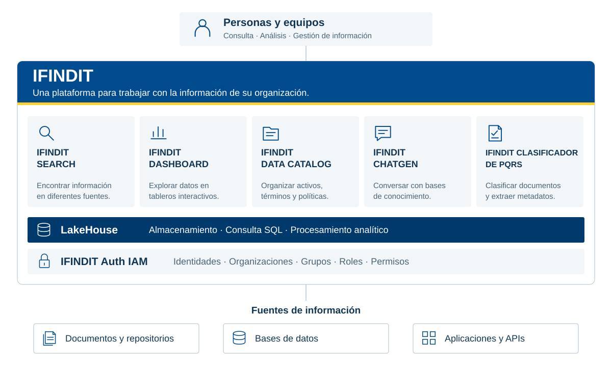

Sistema de Autenticación y Autorización
Sistema integral de gestión de identidades, autenticación y control de acceso basado en roles y permisos para organizaciones multi-tenant.
Gestiona identidades, organizaciones, grupos, roles y permisos de acceso a las aplicaciones y servicios de la plataforma.
Explore las funciones por categoría o encuentre una capacidad específica.
133 características
Sistema integral de gestión de identidades, autenticación y control de acceso basado en roles y permisos para organizaciones multi-tenant.
Módulo principal para la autenticación de usuarios mediante credenciales locales o integración con directorios LDAP.
Autentica usuarios por nombre o correo y contraseña, valida la organización y emite tokens JWT con expiración configurable.
Proceso de cierre de sesión que invalida tokens JWT activos y registra la actividad en logs de auditoría para trazabilidad de sesiones.
Permite renovar tokens JWT durante la sesión según la configuración de autenticación.
Sistema de monitoreo y validación de sesiones activas con capacidad de expiración automática y detección de sesiones huérfanas.
Administración completa del ciclo de vida de usuarios incluyendo creación, edición, eliminación, activación/desactivación y gestión de permisos asociados a grupos y roles.
Creación de nuevos usuarios con validación de unicidad, asignación automática de roles y grupos, y configuración de credenciales iniciales.
Modificación de información de usuario incluyendo datos personales, cambios de rol, asignación a grupos y actualización de permisos.
Proceso de eliminación lógica y física de usuarios con limpieza de relaciones, sesiones activas y registros de auditoría asociados.
Control de estado de usuarios para habilitar o deshabilitar acceso temporal sin eliminar la cuenta, incluyendo limpieza de sesiones activas.
Sistema de recuperación de contraseñas mediante preguntas de seguridad, claves de recuperación y notificaciones por email con expiración automática.
Administración de organizaciones multi-tenant con configuración de parámetros específicos, integración LDAP y gestión de aplicaciones asociadas.
Registro de nuevas organizaciones con configuración de parámetros de seguridad, paleta de colores, logos y configuración de autenticación.
Gestión de parámetros organizacionales incluyendo tiempo de expiración de sesiones, límite de sesiones activas y configuración de autenticación.
Configuración y gestión de conexiones LDAP para autenticación federada, sincronización de usuarios y grupos desde directorios corporativos.
Proceso automático de sincronización de usuarios y grupos desde directorios LDAP con mapeo de atributos y gestión de permisos.
Administración de grupos de usuarios para organización jerárquica y asignación masiva de permisos y roles dentro de la organización.
Creación de grupos con asignación automática de permisos por rol, configuración de grupos de servicios y grupos administrativos.
Vinculación y desvinculación de usuarios a grupos con asignación automática de permisos y roles correspondientes.
Administración de grupos de servicios, grupos administrativos y grupos LDAP con reglas especiales de gestión y eliminación.
Sistema de roles predefinidos con niveles de permisos jerárquicos desde administrador global hasta usuario básico con control granular de acceso.
Incluye roles jerárquicos predefinidos para administración global, organizaciones, grupos y usuarios.
Asignación de roles a usuarios y grupos con validación de permisos y control de herencia jerárquica de permisos.
Sistema de listas de control de acceso para recursos específicos con permisos de visualización y edición granular por grupo y tipo de objeto.
Definición de listas de control de acceso para recursos como dashboards, paneles, fuentes de datos y archivos con permisos específicos.
Asignación y modificación de permisos de visualización y edición para grupos específicos sobre recursos protegidos por ACL.
Configuración de tipos de objetos disponibles para ACL incluyendo dashboards, paneles, buscadores, fuentes de datos y archivos.
Administración de aplicaciones integradas al sistema de autenticación con control de acceso por grupo y propagación de autenticación.
Creación de aplicaciones con configuración de URLs, tipos de aplicación y parámetros de integración con el sistema de autenticación.
Gestión de grupos admitidos y restringidos para cada aplicación con propagación de autenticación configurable.
Distingue tipos de aplicación para configurar sus accesos e integración con el sistema de identidad.
Administración de servicios backend con autenticación mediante certificados, control de acceso por IP y gestión de tokens de servicio.
Creación de servicios con configuración de IP, subred, tipo de servicio y generación de tokens de autenticación seguros.
Sistema de autenticación de servicios mediante certificados cliente, validación de IP y gestión de tokens con expiración.
Gestión de grupos admitidos y restringidos para servicios con validación de IP y control de acceso granular.
Sistema de acciones o políticas que definen operaciones específicas que pueden realizar los usuarios con control de acceso por grupo.
Creación de acciones con descripción, permisos requeridos y configuración de visibilidad para grupos específicos.
Gestión de grupos admitidos y restringidos para acciones específicas con validación de permisos en tiempo de ejecución.
Sistema de verificación de permisos para acciones específicas con validación de roles y grupos del usuario.
Implementación de captcha configurable para protección contra ataques automatizados con personalización de parámetros visuales y de seguridad.
Gestión de parámetros del captcha incluyendo longitud, caracteres, colores, formato de imagen y tiempo de expiración.
Creación dinámica de captchas con configuración personalizable y validación de intentos con límite configurable.
Sistema de validación de respuestas de captcha con control de intentos fallidos y expiración automática.
Registro completo de actividades del sistema para auditoría, trazabilidad y análisis de seguridad con filtros avanzados.
Captura automática de todas las acciones realizadas por usuarios incluyendo creación, edición, eliminación y acceso a recursos.
Sistema de consulta de logs con filtros por usuario, grupo, aplicación, tipo de objeto, fecha y estado de la operación.
Herramientas de análisis de logs con facetas, estadísticas y reportes para auditoría y detección de anomalías.
Sistema de tareas asíncronas para operaciones de larga duración como sincronización LDAP y limpieza de datos con seguimiento de estado.
Generación de tareas asíncronas para operaciones complejas con asignación de identificadores únicos y parámetros de ejecución.
Monitoreo del estado y progreso de tareas asíncronas con capacidad de consulta y notificación de finalización.
Proceso automático de limpieza de tareas completadas y datos obsoletos para optimización del rendimiento del sistema.
Sistema de autenticador web personalizable con elementos configurables, estilos personalizables y redirección post-login.
Gestión de elementos visuales del autenticador como logos, textos, imágenes laterales y pie de página con posicionamiento configurable.
Personalización de estilos visuales incluyendo colores, fuentes, espaciado y diseño responsivo del interfaz de autenticación.
Gestión de URLs de redirección post-autenticación con validación de origen y configuración por organización.
Sistema de servicios de usuario para aplicaciones cliente con autenticación mediante certificados y gestión de contenedores.
Creación de servicios de usuario con validación de certificados cliente, IP de contenedor y generación de tokens de acceso.
Sistema de heartbeat para monitoreo de servicios de usuario activos con detección automática de servicios inactivos.
Proceso automático de limpieza de servicios de usuario inactivos y tokens expirados para optimización de recursos.
Mecanismo de redirección segura para autenticación entre aplicaciones con validación de origen y expiración automática.
Creación de URLs de redirección temporales para autenticación entre aplicaciones con validación de origen aceptado.
Sistema de validación de redirecciones con verificación de origen, expiración y uso único para seguridad.
API pública para validación de redirecciones desde aplicaciones externas sin requerir autenticación previa.
Conjunto de medidas y funcionalidades de seguridad implementadas para proteger el sistema, los datos y las comunicaciones.
Implementación de JSON Web Tokens para autenticación stateless con expiración configurable y blacklisting de tokens revocados.
Genera tokens JWT con atributos personalizados, firma criptográfica y expiración configurable.
Verificación de tokens JWT incluyendo firma, expiración, claims y blacklist de tokens revocados.
Sistema de blacklist para tokens JWT revocados con almacenamiento en Redis y limpieza automática.
Sistema de autenticación federada con directorios LDAP corporativos para sincronización de usuarios y grupos.
Configuración de conexiones LDAP con validación de credenciales, configuración de filtros de búsqueda y mapeo de atributos.
Proceso de sincronización automática de usuarios y grupos desde LDAP con mapeo de atributos y gestión de conflictos.
Sistema de autenticación que permite a usuarios autenticarse con credenciales LDAP corporativas.
Sistema de permisos granular basado en roles, grupos y ACL para control preciso del acceso a recursos.
Sistema de roles jerárquicos con permisos heredados y validación de acceso basada en el nivel de rol del usuario.
Asignación de permisos específicos por grupo con capacidad de restricción y admisión granular.
Listas de control de acceso específicas por recurso con permisos de visualización y edición independientes.
Mecanismos de protección contra ataques comunes como fuerza bruta, automatización y acceso no autorizado.
Sistema de captcha personalizable para protección contra bots y ataques automatizados.
Control de intentos fallidos de autenticación con bloqueo temporal y notificación de eventos de seguridad.
Valida el origen de las solicitudes como parte de los controles de acceso.
Funcionalidades diseñadas para soportar crecimiento y alta disponibilidad del sistema.
Admite varias organizaciones con separación de datos y configuración por organización.
Separa los datos por organización y aplica validaciones de acceso.
Parámetros configurables por organización incluyendo autenticación, estilos y políticas de seguridad.
Arquitectura que permite escalar horizontalmente agregando instancias del servicio según la demanda.
Sistema de gestión de sesiones compatible con arquitecturas distribuidas y balanceadores de carga.
Uso de JWT para autenticación stateless que permite escalabilidad horizontal sin estado compartido.
Sistema de blacklist de tokens distribuido usando Redis para compatibilidad con múltiples instancias.
Parámetros configurables de sesiones incluyendo tiempo de expiración y límite de sesiones activas.
Sistema de tareas en segundo plano para operaciones de larga duración sin afectar la respuesta del usuario.
Sistema de cola de tareas para procesamiento asíncrono de operaciones complejas como sincronización LDAP.
Seguimiento del estado y progreso de tareas asíncronas con capacidad de consulta y notificación.
Procesos automáticos de limpieza de datos obsoletos y tareas completadas para optimización de rendimiento.
Funcionalidades para integración con sistemas externos y aplicaciones cliente.
Interfaz de programación RESTful completa para integración con aplicaciones cliente y sistemas externos.
Conjunto completo de endpoints REST para todas las operaciones del sistema con documentación detallada.
Sistema de autenticación para APIs mediante tokens JWT con validación de permisos y roles.
Sistema de validación de datos de entrada con esquemas Marshmallow y manejo de errores estandarizado.
Sistema de integración con servicios backend mediante certificados y tokens de servicio.
Mecanismo de autenticación para servicios mediante certificados cliente y validación de IP.
Generación y gestión de tokens específicos para servicios con expiración y permisos configurados.
Sistema de heartbeat para monitoreo de servicios activos y detección de servicios inactivos.
Sistema de redirección segura para autenticación entre aplicaciones integradas.
Generación de URLs temporales para redirección entre aplicaciones con validación de origen.
Verificación del origen de las redirecciones para prevenir ataques y acceso no autorizado.
Endpoint público para validación de redirecciones sin requerir autenticación previa.
Sistema completo de monitoreo, logging y auditoría para trazabilidad y análisis de seguridad.
Registro completo de todas las actividades del sistema para auditoría y análisis de seguridad.
Captura automática de todas las acciones realizadas por usuarios con contexto completo.
Registro específico de eventos de seguridad como intentos fallidos de autenticación y cambios de permisos.
Registro de eventos del sistema como creación de tareas, limpieza automática y errores de aplicación.
Herramientas para consulta y análisis de logs con filtros avanzados y reportes.
Sistema de filtros para consulta de logs por usuario, grupo, aplicación, fecha y tipo de evento.
Herramientas de análisis de logs con facetas para identificación de patrones y anomalías.
Genera reportes de auditoría y registros para el análisis de seguridad.
Sistema de monitoreo de recursos del sistema y servicios para detección de problemas.
Sistema de heartbeat para verificación de servicios activos y detección de fallos.
Seguimiento de sesiones activas y detección de sesiones huérfanas o expiradas.
Procesos automáticos de limpieza de datos obsoletos y recursos no utilizados.
Funcionalidades para personalización del sistema según las necesidades específicas de cada organización.
Sistema de autenticador web completamente personalizable con elementos configurables.
Configuración de logos, textos, imágenes y elementos visuales del interfaz de autenticación.
Personalización completa de estilos visuales incluyendo colores, fuentes y diseño responsivo.
Gestión de URLs de redirección post-autenticación específicas por organización.
Parámetros configurables por organización para adaptar el sistema a necesidades específicas.
Configuración de tiempo de expiración de sesiones, límite de intentos y políticas de contraseñas.
Personalización de paleta de colores, logos y elementos visuales de la organización.
Parámetros específicos de autenticación incluyendo integración LDAP y captcha.
Sistema de captcha completamente configurable con parámetros visuales y de seguridad.
Configuración de longitud, caracteres, colores, formato de imagen y estilo del captcha.
Configuración de tiempo de expiración, límite de intentos y exclusión de caracteres similares.
Integración del captcha en el flujo de autenticación con configuración específica por organización.
No encontramos características con esos términos. Intente una palabra diferente.
Explore cómo se relaciona con los demás productos y las capacidades compartidas.

Una vista funcional de IFINDIT y sus capacidades compartidas. Cada producto conecta necesidades distintas de la organización.
Descargar diagrama SVGCuéntenos qué necesita encontrar, analizar u organizar. Conozca IFINDIT con el equipo de Creangel.